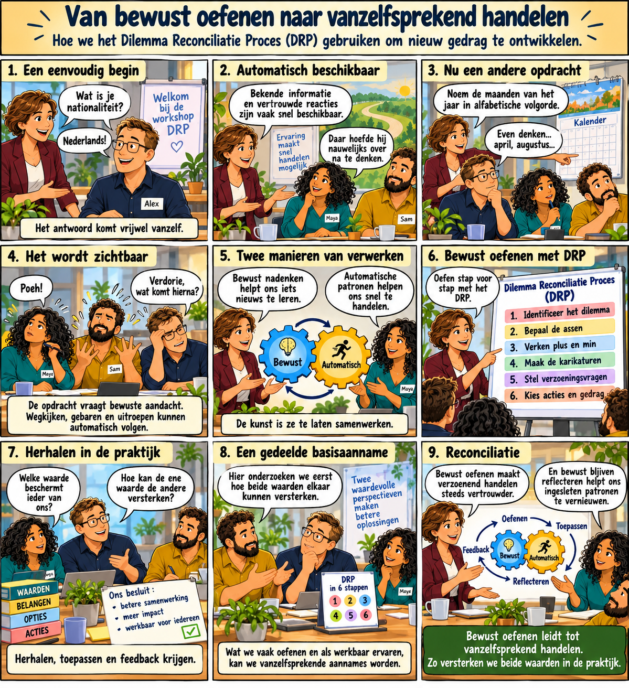

Van bewust oefenen naar vanzelfsprekend handelen
Een andere manier van omgaan met dilemma’s ontstaat niet door één goed gesprek. Door bewust te oefenen, toe te passen en te reflecteren, worden nieuwe patronen steeds vanzelfsprekender.

Een andere manier van omgaan met dilemma’s ontstaat niet door één goed gesprek. Door bewust te oefenen, toe te passen en te reflecteren, worden nieuwe patronen steeds vanzelfsprekender.
